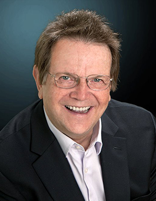
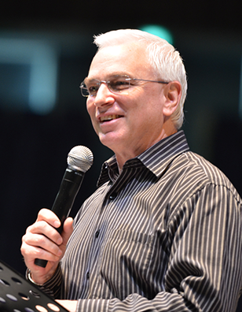
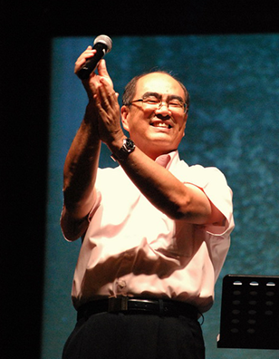
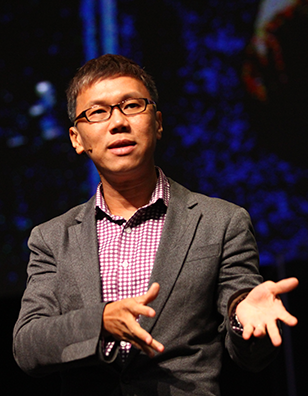

24-25 May @ Singapore Indoor Stadium
Speakers
Evangelist
Reinhard Bonnke
Christ for All Nations

Reinhard Bonnke
Evangelist Reinhard Bonnke is known for his Great Gospel Crusades throughout Africa. These city-wide meetings have grown from 800 to as many as 1,600,000 people attending a single meeting.
Reinhard Bonnke founded the international ministry of Christ for all Nations, which has recorded 55 million documented decisions for Jesus Christ all around the world. He also hosts the 'Fire Conferences' that aim to equip church leaders and workers for evangelism.
Rev Dr Rick Seaward
Apostolic Overseer of Victory Family Centre

Rick Seaward
Leader and anointed speaker, Rev Dr Rick Seaward is known for his incredible vision for world evangelization. He is the founding pastor and Apostolic Overseer of Victory Family Centre in Singapore, which has grown to more than 5,000 members since 1977.
Rick Seaward believes that every local church has a part to play in world missions. Under his leadership, Victory Family Centre innovated the concept of mobilizing 1-year volunteers to pioneer churches in foreign countries, and has to date more than 8000 churches worldwide.

Simon Eng
Ps Simon Eng currently serves as the President of Hope International Ministries (HIM) where he looks after various regional churches of Hope.
Born in Selangor, he pioneered Hope Kuching in 1992, and since then, the church has produced many leaders and pioneers in the movement. Then in 2001, he moved back to Kuala Lumpur to be the Senior Pastor of Hope Kuala Lumpur.
Pastor Simon loves to minister to build God’s people and is actively serving to fulfill The Great Commission.
Pastor Simon Eng
President of Hope International Ministries

Jeff Chong
As the Senior Pastor of Hope Church (Singapore), Pastor Jeff is dedicated to see the church fulfill God’s calling and the Great Commission. He has led our Pastoral Division for almost 10 years, leading all the people groups in the church.
He has also ministered in many countries from Europe, Africa to Australia, teaching and preaching the Word of God to the churches there. Jeff currently also serves as the leader overseeing the Church Growth and Leadership Conferences for Hope International churches.
Pastor Jeffrey Chong
Senior Pastor of Hope Church Singapore
Registration
Early Bird Registration: 15 Feb to 16 Mar
Normal Registration: 17 Mar to 28 Apr
Late Registration: After 28 Apr
To register, login to your e2hope or key in your code to sign up now!
Normal Registration: 17 Mar to 28 Apr
Late Registration: After 28 Apr
To register, login to your e2hope or key in your code to sign up now!
Getting There
By Train
Stadium MRT Station (Circle Line) is the nearest station within walking distance to Singapore Indoor Stadium.
From Kallang MRT Station (East West Line), it's a 10-minute journey on Bus Service no. 11 at the Geylang Lorong 1 Bus Terminal across Sims Avenue.
By Bus
Visitors can take a 10-minute bus ride on Bus Service no. 11 at the Geylang Lorong 1 Bus Terminal across Sims Avenue.
By Car
Parking lots are available at the Singapore Indoor Stadium (Car Park L), which is operated using the electronic parking system at $6 per entry.